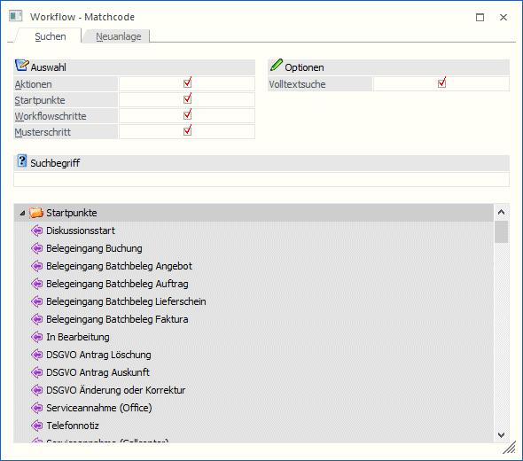

Im Workflow Matchcode werden alle Startpunkte von Workflows, Workflowschritt und/oder Aktionen angezeigt.

Im Feld
Ø Suchbegriff
kann ein Begriff eingegeben werden, nach dem gesucht werden soll. Über die Checkbox
Ø Volltextsuche
kann bestimmt werden, ob der Suchbegriff im kompletten Text (aktiviert) oder nur am Anfang (deaktiviert) gesucht werden soll.
Ø Auswahl
Über die Checkboxen
Ø Aktionen
Ø Startpunkte
Ø Workflowschritte
Ø Musterschritt
kann auch noch das Suchergebnis eingeschränkt werden.
Durch Anklicken des OK-Buttons wird die Suche gemäß den Einschränkungen durchgeführt. Das Suchergebnis wird in einer Baumstruktur angezeigt, wobei der gewünschte Eintrag mit einem Doppelklick übernommen werden kann. Durch Drücken der ESC-Taste wird das Fenster geschlossen.